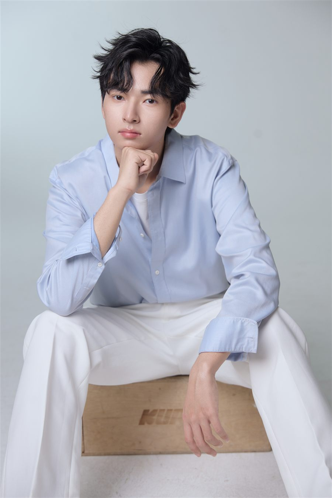
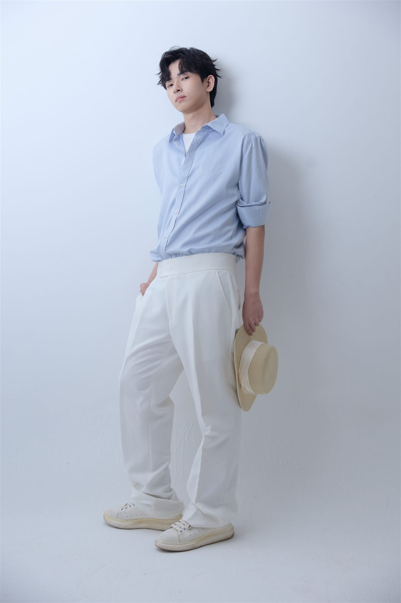
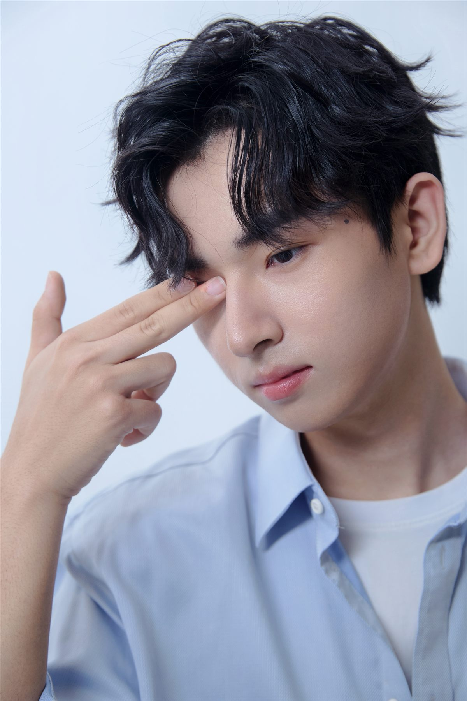
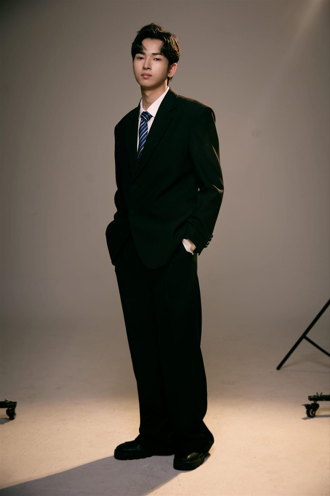
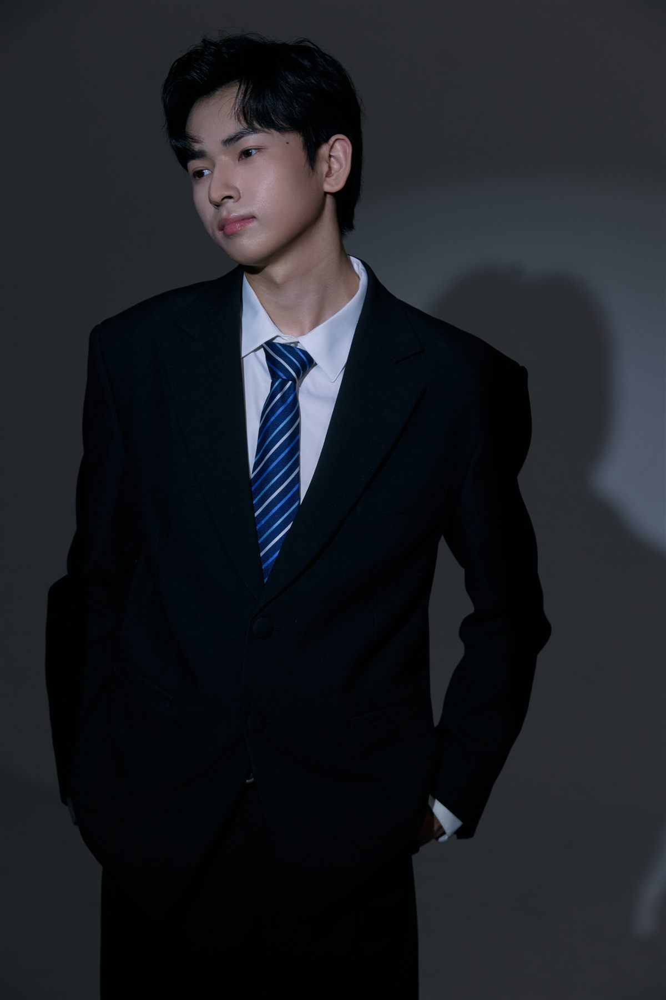
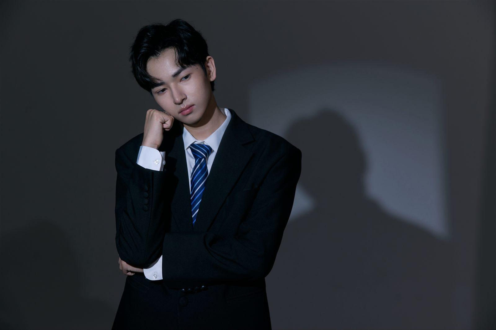

镜头表现
可完成特写、半身、全身等拍摄，表情稳定，能呈现清爽或冷峻的不同氛围。
诚接青少年服装平面模特

Teen Fashion Model
匡麒澳
可驾驭浅色衬衫、白色长裤、校园休闲、少年正装等服装风格。 画面表现干净自然，也能呈现冷静利落的正式感，适合品牌形象照、电商详情页、宣传海报和社交媒体内容。
Skills
可完成特写、半身、全身等拍摄，表情稳定，能呈现清爽或冷峻的不同氛围。
适合浅色休闲衬衫、白色裤装、少年西装和校园风服饰，能突出线条与版型。
能配合摄影师完成站姿、坐姿、侧身和细节特写，适合成组服装案例输出。
Cases

清爽休闲
整体明亮干净，适合春夏衬衫、白裤、轻休闲服装的平面展示。

细节特写
突出面部表现、领口层次和衬衫质感，适合详情页首图与社交媒体封面。

正式正装
呈现少年正装的挺括轮廓，适合西装、礼服、校园制服类品牌宣传。

光影氛围
低调光影强化正式感和人物气质，适合品牌形象照与视觉海报。

横幅海报
横向构图留出画面空间，适合官网横幅、活动宣传和系列主题封面。